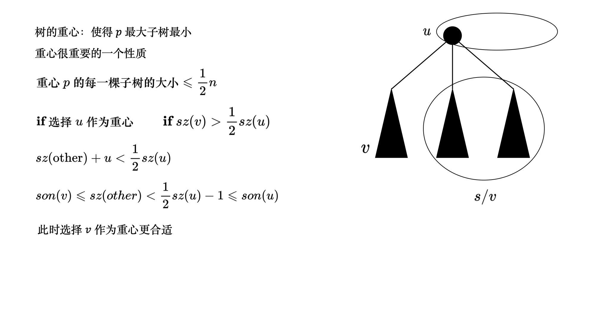
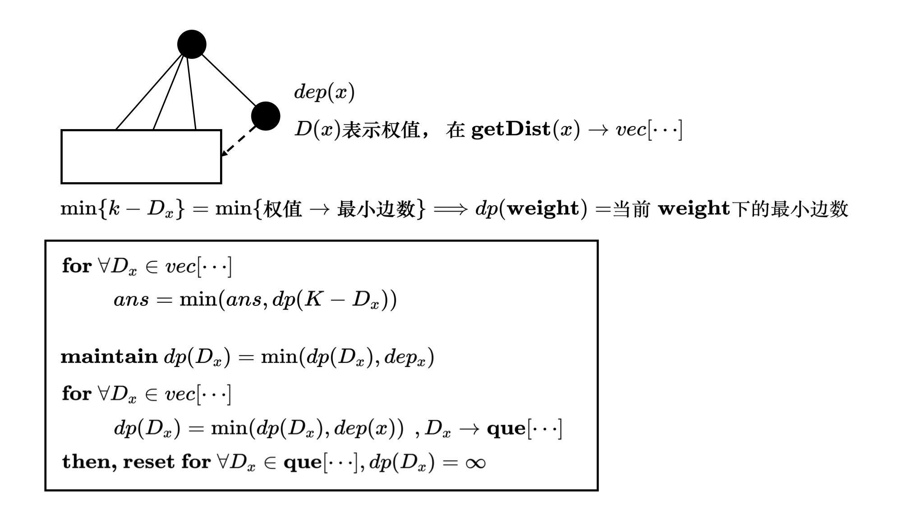

分治算法中有一些值得探讨的高级专题CDQ \text{CDQ} CDQ
点分治 POJ1741

1 2 3 4 5 6 7 8 9 10 11 12 13 14 15 16 17 18 19 20 21 22 23 24 25 26 27 28 29 30 31 32 33 34 35 36 37 38 39 40 41 42 43 44 45 46 47 48 49 50 51 52 53 54 55 56 57 58 59 60 61 62 63 64 65 66 67 68 69 70 71 72 73 74 75 76 77 78 79 80 81 82 83 84 85 86 87 88 89 90 91 92 93 94 95 96 97 98 99 100 101 102 103 104 105 106 107 108 109 110 111 112 113 114 115 116 117 118 119 120 121 122 123 124 125 126 127 128 129 130 131 132 133 134 135 136 137 138 139 const int maxn = 1e5 + 10; const int inf = 0x3f3f3f3f; int n, k; // == Graph definition == int M = 0; class Edge { public: int to, weight; Edge *next; Edge Edge(int to, int w) : to(to), weight(w) { next = NULL; } } edges[maxn << 1], *head[maxn]; void initG() { M = 0; memset(head, 0, sizeof(head)); } void add(int u, int v, int w) { edges[++M] = Edge(v, w); edges[M].next = head[u]; head[u] = &edges[M]; } // == Graph finished == // == find gravity and get root == int sz[maxn]; int sn = n; int vis[maxn]; int root = 0; void getRoot(int x, int pa, int& res) { sz[x] = 1 ; int maxpart = 0; for (const Edge *e = head[x]; e; e = e->next) { int y = e->to; int w = e->weight; if (vis[y] || y == pa) continue ; getRoot(y, x, res); sz[x] += sz[y]; maxpart = max(maxpart, sz[y]); } maxpart = max(maxpart, sn - sz[x]); if (maxpart < res) { res = maxpart; root = x; } } // == get root finished == // == getDep == int dep[maxn]; void getDep(int x, int pa, vector<int>& vec) { vec.push_back(dep[x]); for (const Edge *e = head[x]; e; e = e->next) { int y = e->to; int w = e->weight; if (y == pa || vis[y]) continue ; dep[y] = dep[x] + w; getDep(y, x, vec); } } // == getDep finished == // == cal(p) == inline int cal(int x) { vector<int> vec; getDep(x, 0, vec); sort(vec.begin(), vec.end()); int sum = 0, i = 0, j = vec.size() - 1; while (i < j) { if (vec[i] + vec[j] <= k) sum += j - i, i++; else j--; } return sum; } // == cal(p) finished == // == work == void work(int x, int& ans) { dep[x] = 0; vis[x] = 1; ans += cal(x); for (const Edge *e = head[x]; e; e = e->next) { int y = e->to; int w = e->weight; if (vis[y]) continue ; dep[y] = dep[x] + w; ans -= cal(y); sn = sz[y]; root = 0; int res = inf; getRoot(y, 0, res); work(root, ans); } } // == work finished == void init // Set(sz, 0); Set(vis, 0); sn = n; root = 0; } int main freopen("input.txt" , "r" , stdin); while (scanf("%d%d" , &n, &k) == 2 && n) { initG(); init(); // input data _for(i, 1, n) { int x, y, w; scanf("%d%d%d" , &x, &y, &w); add(x, y, w); add(y, x, w); } // input finished int res = inf; getRoot(1, 0, res); int ans = 0; work(root, ans); printf ("%d\n" , ans); } }
点分治树状数组统计 r o o t ← g e t R o o t ( x ) root \leftarrow getRoot(x) r o o t ← g e t R o o t ( x ) find gravity \text{find }\textbf{gravity} find gravity
algorithm: s o l v e ( x ← gravity ) \textbf{algorithm:} \ solve(x\leftarrow \text{gravity}) algorithm: s o l v e ( x ← gravity )
x is the root, let d e p ( x ) = 0 x \text{ is the root, let } dep(x) = 0 x is the root, let d e p ( x ) = 0 g e t D e p ( x ∪ s u b T r e e ) getDep(x \ \cup \ subTree) g e t D e p ( x ∪ s u b T r e e ) ~~~~~~ → cal ( x ) \rightarrow \textbf{cal}(x) → cal ( x ) for ∀ ( x , y ) ∈ [ s 1 , s 2 , ⋯ , s k ] , s i is subTree \textbf{for} \ \forall (x, y) \in [s_1, s_2, \cdots, s_k], s_i \text{ is subTree} for ∀ ( x , y ) ∈ [ s 1 , s 2 , ⋯ , s k ] , s i is subTree ~~~~~~ s n = size ( y ) sn = \text{size}(y) s n = size ( y ) ~~~~~~ r o o t ← g e t R o o t ( y ) , s o l v e ( r o o t ) root \leftarrow getRoot(y), solve(root) r o o t ← g e t R o o t ( y ) , s o l v e ( r o o t ) algorithm: cal ( x ) \textbf{algorithm:} \ \textbf{cal}(x) algorithm: cal ( x )
fwick . a d d ( d e p ( x ) , 1 ) \text{fwick}.add(dep(x), 1) fwick . a d d ( d e p ( x ) , 1 )
for ∀ e ( x , y ) ∈ [ S i ] \textbf{for} \ \forall e(x, y) \in [S_i] for ∀ e ( x , y ) ∈ [ S i ] ~~~~~~ d e p ( y ) = d e p ( x ) + w ( x , y ) dep(y)=dep(x)+w(x, y) d e p ( y ) = d e p ( x ) + w ( x , y ) ~~~~~~ g e t D e p ( y ∪ S i ) → d e p v e c [ ⋯ ] getDep(y \ \cup \ S_i) \xrightarrow{dep} vec[\cdots] g e t D e p ( y ∪ S i ) d e p v e c [ ⋯ ]
~~~~~~ for ∀ ( d : v e c ) \textbf{for} \ \forall(d:vec) for ∀ ( d : v e c ) ~~~~~~ i) fwick . a s k ( K − d ) count how many: \textbf{i)} \ \text{fwick}.ask(K-d) \text{ count how many: } i) fwick . a s k ( K − d ) count how many: ~~~~~~~~~~ ( S j ∣ S j ≠ S i ) + ( d ∈ S i ) ⩽ K (S_j | S_j \neq S_i)+(d \in S_i) \leqslant K ( S j ∣ S j = S i ) + ( d ∈ S i ) ⩽ K ~~~~~~ ii) then fwick . a d d ( d ∈ S i , 1 ) \textbf{ii)} \ \textbf{then} \ \text{fwick}.add(d \in S_i, 1) ii) then fwick . a d d ( d ∈ S i , 1 )
reset fenwick \text{reset fenwick} reset fenwick for ∀ ( d : v e c ) \textbf{for} \ \forall (d:vec) for ∀ ( d : v e c ) ~~~~~~ fwick . a d d ( d , − 1 ) \text{fwick}.add(d, -1) fwick . a d d ( d , − 1 ) fwick . a d d ( d e p ( x ) , − 1 ) \text{fwick}.add(dep(x), -1) fwick . a d d ( d e p ( x ) , − 1 )
1 2 3 4 5 6 7 8 9 10 11 12 13 14 15 16 17 18 19 20 21 22 23 24 25 26 27 28 29 30 31 32 33 34 35 36 37 38 39 40 41 42 43 44 45 46 47 48 49 50 51 52 53 54 55 56 57 58 59 60 61 62 63 64 65 66 67 68 69 70 71 72 73 74 75 76 77 78 79 80 81 82 83 84 85 86 87 88 89 90 91 92 93 94 95 96 97 98 99 100 101 102 103 104 105 106 107 108 109 110 111 112 113 114 115 116 117 118 119 120 121 122 123 124 125 126 127 128 129 130 131 132 133 134 135 136 137 138 139 140 141 142 143 144 145 146 147 148 149 150 151 152 153 154 155 156 157 158 159 160 161 162 163 164 165 166 167 168 169 170 171 172 173 174 175 176 177 178 179 180 181 182 183 184 185 186 187 188 189 190 191 192 193 194 195 196 197 const int maxn = 1e5 + 10; const int MAXN = maxn << 5; const int inf = 0x3f3f3f3f; int N, K; // == Fenwick == class Fwick { public: vector<int> C; int n; void resize(int n) { this->n = n; C.resize(n); } void clear() { fill(C.begin(), C.end(), 0); } int ask(int x) { x++; int ans = 0; for(; x > 0; x -= lowbit(x)) ans += C[x]; return ans; } void add(int x, int d) { x++; for(; x <= K + 10; x += lowbit(x)) C[x] += d; } int find(int l, int r, int val) { while (l < r) { int mid = (l + r) >> 1; if(ask(mid) < val) l = mid + 1; else r = mid; } return l; } } fwick; // == Fenwick finished == // == Graph definition == int m = 0; class Edge { public: int to, weight; Edge *next; Edge() {} Edge(int to, int w) : to(to), weight(w) { next = NULL; } } edges[maxn << 1], *head[maxn]; void add(int u, int v, int w) { edges[++m] = Edge(v, w); edges[m].next = head[u]; head[u] = &edges[m]; } void initG() { m = 0; memset(head, 0, sizeof(head)); } // == Graph finished == int sz[maxn]; int dep[maxn]; int vis[maxn]; int sn = N; int root = 0; // == get gravity as root == void getRoot(int x, int pa, int &res) { sz[x] = 1; int maxpart = 0; for(const Edge *e = head[x]; e; e = e->next) { int y = e->to; if(vis[y] || y == pa) continue; getRoot(y, x, res); sz[x] += sz[y]; maxpart = max(maxpart, sz[y]); } maxpart = max(maxpart, sn - sz[x]); if(maxpart < res) { res = maxpart; root = x; } } // == get root finished == // == get dep and calculate == void getDep(int x, int pa, vector<int> &vec) { vec.push_back(dep[x]); for(const Edge *e = head[x]; e; e = e->next) { int y = e->to; int w = e->weight; if(vis[y] || y == pa) continue; dep[y] = dep[x] + w; if(dep[y] <= K) getDep(y, x, vec); } } queue<int> buf; inline void cal(int x, int &ans) { fwick.add(dep[x], 1); for(const Edge *e = head[x]; e; e = e->next) { int y = e->to; int w = e->weight; if(vis[y]) continue; dep[y] = dep[x] + w; vector<int> vec; getDep(y, x, vec); _for(i, 0, vec.size()) if(K >= vec[i]) { ans += fwick.ask(K - vec[i]); } _for(i, 0, vec.size()) { fwick.add(vec[i], 1); buf.push(vec[i]); } } while (buf.size()) { fwick.add(buf.front(), -1); buf.pop(); } fwick.add(dep[x], -1); } // == get dep finsihed == // == solve == void solve(int x, int &ans) { dep[x] = 0; vis[x] = 1; cal(x, ans); for(const Edge *e = head[x]; e; e = e->next) { int y = e->to; int w = e->weight; if(vis[y]) continue; sn = sz[y]; root = 0; int res = inf; getRoot(y, -1, res); solve(root, ans); } } // == solve finished == void init() { Set(sz, 0); Set(dep, 0); Set(vis, 0); sn = N; root = 0; fwick.resize(MAXN); fwick.clear(); } int main() { freopen("input.txt", "r", stdin); while (scanf("%d%d", &N, &K) == 2 && N) { init(); initG(); // get data _for(i, 1, N) { int u, v, w; scanf("%d%d%d", &u, &v, &w); add(u, v, w); add(v, u, w); } // data finished int res = inf; getRoot(1, -1, res); int ans = 0; solve(root, ans); printf("%d\n", ans); } }
点分治例子 Acwing264
algorithm \textbf{algorithm} algorithm
solve ( x , ans ) \textbf{solve}(x, \text{ans}) solve ( x , ans ) ~~~~~~ dep ( x ) = 0 , vis ( x ) = 1 \text{dep}(x) = 0, \text{vis}(x) = 1 dep ( x ) = 0 , vis ( x ) = 1 ~~~~~~ cal ( x , a n s ) \textbf{cal}(x, ans) cal ( x , a n s ) ~~~~~~ for ∀ y ∈ s o n ( x ) \textbf{for} \ \forall y \in son(x) for ∀ y ∈ s o n ( x ) ~~~~~~~~~~ r o o t ← g e t R o o t ( ) , solve ( r o o t , a n s ) root \leftarrow getRoot(), \textbf{solve}(root, ans) r o o t ← g e t R o o t ( ) , solve ( r o o t , a n s )
cal ( x , y ) \textbf{cal}(x, y) cal ( x , y ) cal \text{cal} cal

用vec1 [ ⋯ ] \textbf{vec1}[\cdots] vec1 [ ⋯ ] D [ ⋯ ] , and vec2 [ ⋯ ] \textbf{D}[\cdots], \text{ and }\textbf{vec2}[\cdots] D [ ⋯ ] , and vec2 [ ⋯ ] dep [ ⋯ ] \textbf{dep}[\cdots] dep [ ⋯ ]
1 2 3 4 5 6 7 8 9 10 11 12 13 14 15 16 17 18 19 20 21 22 23 24 25 26 27 28 29 30 31 32 33 34 35 36 37 38 39 40 41 42 43 44 45 46 47 48 49 50 51 52 53 54 55 56 57 58 59 60 61 62 63 64 65 66 67 68 69 70 71 72 73 74 75 76 77 78 79 80 81 82 83 84 85 86 87 88 89 90 91 92 93 94 95 96 97 98 99 100 101 102 103 104 105 106 107 108 109 110 111 112 113 114 115 116 117 118 119 120 121 122 123 124 125 126 127 128 129 130 131 132 133 134 135 136 137 138 139 140 141 142 143 144 145 146 147 148 149 150 151 152 153 154 155 156 157 158 159 160 161 162 163 164 const int maxn = 1e6 + 10; const int inf = 0x3f3f3f3f; int N, K; // == Graph definition == int m = 0; class Edge { public: int to, weight; Edge *next; Edge Edge(int to, int w) : to(to), weight(w) { next = NULL; } } edges[maxn << 1], *head[maxn]; void initG() { m = 0; memset(head, 0, sizeof(head)); } void add(int u, int v, int w) { edges[++m] = Edge(v, w); edges[m].next = head[u]; head[u] = &edges[m]; } // == Graph finished == // == get root == int root = 0; int sn = N; int sz[maxn]; int vis[maxn]; void getRoot(int x, int pa, int &res) { sz[x] = 1 ; int maxpart = 0; for (const Edge *e = head[x]; e; e = e->next) { int y = e->to; if (vis[y] || y == pa) continue ; getRoot(y, x, res); sz[x] += sz[y]; maxpart = max(maxpart, sz[y]); } maxpart = max(maxpart, sn - sz[x]); if (maxpart < res) { res = maxpart; root = x; } } // == get root finished == // == solve == int dep[maxn]; int D[maxn]; int dp[maxn]; void dfs(int x, int pa, vector<int> &vec1, vector<int> &vec2) { vec1.push_back(D[x]); vec2.push_back(dep[x]); for (const Edge *e = head[x]; e; e = e->next) { int y = e->to; int w = e->weight; if (vis[y] || y == pa) continue ; dep[y] = dep[x] + 1; D[y] = D[x] + w; if (D[y] <= 1e6) dfs(y, x, vec1, vec2); } } queue<int> que; void cal(int x, int &ans) { for (const Edge *e = head[x]; e; e = e->next) { int y = e->to; int w = e->weight; if (vis[y]) continue ; vector<int> vec1, vec2; dep[y] = dep[x] + 1; D[y] = D[x] + w; dfs(y, x, vec1, vec2); _for(i, 0, vec1.size()) { if (K >= vec1[i]) ans = min(ans, dp[K - vec1[i]] + vec2[i]); } _for(i, 0, vec1.size()) { que.push(vec1[i]); dp[vec1[i]] = min(dp[vec1[i]], vec2[i]); } } while (que.size()) { dp[que.front()] = inf; que.pop(); } } void solve(int x, int &ans) { vis[x] = 1; dep[x] = 0; D[x] = 0; dp[0] = 0; cal(x, ans); for (const Edge *e = head[x]; e; e = e->next) { int y = e->to; int w = e->weight; if (vis[y]) continue ; sn = sz[y]; root = 0; int res = inf; getRoot(y, x, res); solve(root, ans); } } // == solve finished == void init root = 0; sn = N; Set(sz, 0); Set(vis, 0); Set(dep, 0); Set(D, 0); Set(dp, inf); } int main freopen("input.txt" , "r" , stdin); scanf("%d%d" , &N, &K); initG(); init(); _for(i, 1, N) { int u, v, w; scanf("%d%d%d" , &u, &v, &w); u++; v++; add(u, v, w); add(v, u, w); } // then solve the problem int res = inf; getRoot(1, -1, res); int ans = inf; solve(root, ans); if (ans == inf) printf ("-1\n" ); else printf ("%d\n" , ans); }
一些算法技巧 algorithm 差分 \textbf{algorithm} \ \textbf{差分} algorithm 差分
A [ . . . ] = A 1 , A 2 , A 3 , ⋯ , A n A[...]=A_1,A_2,A_3, \cdots ,A_n A [ . . . ] = A 1 , A 2 , A 3 , ⋯ , A n B i = A i − A i − 1 , B 1 = A 1 B_i = A_i - A_{i-1}, \ B_1 = A_1 B i = A i − A i − 1 , B 1 = A 1 B B B A A A 差分序列
A i = ∑ j = 1 i B j A_i = \sum_{j = 1}^{i} B_j A i = j = 1 ∑ i B j
性质2 A [ l , r ] ← + C A[l, r] \xleftarrow{+C} A [ l , r ] + C A [ l , r ] A[l, r] A [ l , r ] C C C ⇔ B r + 1 − C , B l + C \Leftrightarrow B_{r+1} - C, B_{l} + C ⇔ B r + 1 − C , B l + C Acwing100
algorithm, solve ( B i , B j ) , i < j \textbf{algorithm,} \ \textbf{solve} \ (B_i, B_j) , i < j algorithm, solve ( B i , B j ) , i < j B 2 , B 3 ⋯ , B n B_2, B_3\cdots, B_n B 2 , B 3 ⋯ , B n 0 0 0
2 ⩽ i < j ⩽ n , 能够处理 B [ 2 ⋯ n ] 中的 2 个数 B i , B j 2\leqslant i < j \leqslant n, \text{ 能够处理 } B[2\cdots n] \text{ 中的 } 2 \text{ 个数 } B_i, B_j 2 ⩽ i < j ⩽ n , 能够处理 B [ 2 ⋯ n ] 中的 2 个数 B i , B j A [ i , ⋯ , j − 1 ] A[i, \cdots, j-1] A [ i , ⋯ , j − 1 ]
i = 1 , 2 ⩽ j ⩽ n i = 1, 2 \leqslant j \leqslant n i = 1 , 2 ⩽ j ⩽ n A [ ⋯ ] A[\cdots] A [ ⋯ ]
2 ⩽ i ⩽ n , j = n + 1 2 \leqslant i \leqslant n, j = n + 1 2 ⩽ i ⩽ n , j = n + 1 A [ ⋯ ] A[\cdots] A [ ⋯ ]
i = 1 , j = n + 1 i = 1, j = n + 1 i = 1 , j = n + 1 A A A
algorithm \textbf{algorithm} algorithm
do type i) , when B i ⋅ B j < 0 \textbf{do} \ \text{type i) , when } B_i \cdot B_j <0 do type i) , when B i ⋅ B j < 0 other, do type ii) or iii) \text{other, do type ii) or iii)} other, do type ii) or iii) example, remain r unpaired \text{example, remain }\textbf{r} \ \textbf{unpaired} example, remain r unpaired → [ ii) , iii) ] = ( 0 , r ) , ( 1 , r ) , ⋯ , ( r , 0 ) \rightarrow [\text{ii)}, \text{iii)}] = (0, r), (1, r), \cdots, (r, 0) → [ ii) , iii) ] = ( 0 , r ) , ( 1 , r ) , ⋯ , ( r , 0 ) → t o t = r + 1 \rightarrow tot =r+1 → t o t = r + 1 1 2 3 4 5 6 7 8 9 10 11 12 13 14 15 16 17 18 19 20 21 22 23 24 25 26 27 28 29 30 const int maxn = 1e5 + 10; int A[maxn], B[maxn]; int n; void init Set(B, 0); } int main freopen("input.txt" , "r" , stdin); scanf("%d" , &n); init(); _rep(i, 1, n) scanf("%d" , &A[i]); B[1] = 1; _rep(i, 2, n) B[i] = A[i] - A[i - 1]; ll s1 = 0, s2 = 0; _rep(i, 2, n) { if (B[i] > 0) s1 += B[i]; else s2 -= B[i]; } ll ans = min(s1, s2) + abs(s1 - s2); cout << ans << endl; ll ans2 = abs(s1 - s2) + 1; cout << ans2 << endl; }
树状数组维护差分序列 POJ3468
[ l , r ] ← + d [l, r] \xleftarrow{+d} [ l , r ] + d B i = A i − A i − 1 B_i = A_i - A_{i - 1} B i = A i − A i − 1
A i = ∑ j = 1 i B j S prefix ( x ) = ∑ i = 1 x A i = ∑ i = 1 x ∑ j = 1 i B j = ∑ i = 1 x ( x − i + 1 ) B i = ( x + 1 ) ∑ i = 1 x B i − ∑ i = 1 x i ⋅ B i \begin{gathered} A_i = \sum_{j = 1}^{i} B_j \\ \ \\ S_{\text{prefix}}(x) = \sum_{i = 1}^{x} A_i = \sum_{i = 1}^{x}\sum_{j = 1}^{i} B_j \\ \ \\ = \sum_{i = 1}^{x}(x-i+1)B_i = (x+1)\sum_{i = 1}^{x}B_i - \sum_{i = 1}^{x}i \cdot B_i \end{gathered} A i = j = 1 ∑ i B j S prefix ( x ) = i = 1 ∑ x A i = i = 1 ∑ x j = 1 ∑ i B j = i = 1 ∑ x ( x − i + 1 ) B i = ( x + 1 ) i = 1 ∑ x B i − i = 1 ∑ x i ⋅ B i
algorithm \textbf{algorithm} algorithm
fwick[0] ← ∑ i = 1 x B i , fwick[1] ← ∑ i = 1 x i B i \text{fwick[0]} \leftarrow \sum_{i = 1}^{x} B_i, \quad \text{fwick[1]} \leftarrow \sum_{i = 1}^{x} i B_i fwick[0] ← ∑ i = 1 x B i , fwick[1] ← ∑ i = 1 x i B i change: [ l , r ] \textbf{change:} \ [l, r] change: [ l , r ] ~~~~~~ fwick[0] . a d d ( r + 1 , − d ) , fwick[0] . a d d ( l , d ) \text{fwick[0]}.add(r+1, -d), \quad \text{fwick[0]}.add(l, d) fwick[0] . a d d ( r + 1 , − d ) , fwick[0] . a d d ( l , d ) ~~~~~~ fwick[1] . a d d ( r + 1 , − ( r + 1 ) d ) , fwick[1] . a d d ( l , l d ) \text{fwick[1]}.add(r+1, -(r+1)d), \quad \text{fwick[1]}.add(l, ld) fwick[1] . a d d ( r + 1 , − ( r + 1 ) d ) , fwick[1] . a d d ( l , l d ) ask: [ l , r ] \textbf{ask:} \ [l, r] ask: [ l , r ] ~~~~~~ S ( r ) = ( fwick [ 0 ] . a s k ( r ) ) × ( r + 1 ) − fwick[1] ( r ) S(r) = (\text{fwick}[0].ask(r)) \times (r+1) - \text{fwick[1]}(r) S ( r ) = ( fwick [ 0 ] . a s k ( r ) ) × ( r + 1 ) − fwick[1] ( r ) ~~~~~~ S ( l − 1 ) = ( fwick [ 0 ] . a s k ( l − 1 ) ) × ( l ) − fwick[1] ( l − 1 ) S(l -1) = (\text{fwick}[0].ask(l - 1)) \times (l) - \text{fwick[1]}(l - 1) S ( l − 1 ) = ( fwick [ 0 ] . a s k ( l − 1 ) ) × ( l ) − fwick[1] ( l − 1 ) ~~~~~~ ans = S ( r ) − S ( l − 1 ) \textbf{ans} = S(r) - S(l - 1) ans = S ( r ) − S ( l − 1 ) 1 2 3 4 5 6 7 8 9 10 11 12 13 14 15 16 17 18 19 20 21 22 23 24 25 26 27 28 29 30 31 32 33 34 35 36 37 38 39 40 41 42 43 44 45 46 47 48 49 50 51 52 53 54 55 56 57 58 59 60 61 62 63 64 65 66 67 68 69 70 71 72 73 74 75 76 77 const int maxn = 100000 + 10; int n, m; ll A[maxn]; // == fenwick definition == class Fwick { public: vector<ll> C[2]; int n; void resize(int n) { this->n = n; _for(i, 0, 2) C[i].resize(n + 1); } void clear _for(i, 0, 2) fill(C[i].begin(), C[i].end(), 0ll); } void add(int k, int x, ll d) { int i = x; for (; i <= n; i += lowbit(i)) C[k][i] += 1ll * d; } ll ask(int k, int x) { ll ans = 0; for (int i = x; i; i -= lowbit(i)) ans += C[k][i]; return ans; } } fwick; // == fenwick finsihed == ll prefix(int x) { return fwick.ask(0, x) * (x + 1) - fwick.ask(1, x); } void init fwick.resize(maxn); fwick.clear(); } int main freopen("input.txt" , "r" , stdin); scanf("%d%d" , &n, &m); init(); _rep(i, 1, n) { scanf("%lld" , &A[i]); fwick.add(0, i, A[i] - A[i - 1]); fwick.add(1, i, i * (A[i] - A[i - 1])); } // then solve while (m--) { char cmd[2]; scanf("%s" , cmd); if (cmd[0] == 'C' ) { int l, r, d; scanf("%d%d%d" , &l, &r, &d); fwick.add(0, r + 1, -1ll * d); fwick.add(0, l, 1ll * d); fwick.add(1, r + 1, -1ll * d * (r + 1)); fwick.add(1, l, 1ll * d * l); } else { int l, r; scanf("%d%d" , &l, &r); ll ans = prefix(r) - prefix(l - 1); printf ("%lld\n" , ans); } } }
树状数组求逆序对 algorithm: A [ ⋯ ] \textbf{algorithm:} \ \textbf{A}[\cdots] algorithm: A [ ⋯ ] for ∀ i ∈ [ 1 , n ] \textbf{for} \ \forall i \in [1, n] for ∀ i ∈ [ 1 , n ] ~~~~~~ check [ 1 , 2 , ⋯ , i ] → fwick [ ⋯ ] \textbf{check} \ [1, 2, \cdots, i] \rightarrow \textbf{fwick}[\cdots] check [ 1 , 2 , ⋯ , i ] → fwick [ ⋯ ] ~~~~~~ fwick . a d d ( A [ i ] , 1 ) \textbf{fwick}.add(A[i], 1) fwick . a d d ( A [ i ] , 1 )
~~~~~~ fwick . s u m ( A [ i ] ) → ( how many ⩽ A [ i ] ) ∈ [ 1 , ⋯ , i ] \textbf{fwick}.sum(A[i]) \rightarrow (\text{how many} \leqslant A[i]) \in [1, \cdots, i] fwick . s u m ( A [ i ] ) → ( how many ⩽ A [ i ] ) ∈ [ 1 , ⋯ , i ]
ans = ∑ ( i − fwick . s u m ( A [ i ] ) ) \text{ans} = \sum (i - \text{fwick}.sum(A[i])) ans = ∑ ( i − fwick . s u m ( A [ i ] ) )
1 2 3 4 5 6 7 8 9 10 11 12 13 14 15 16 17 18 19 20 21 22 23 24 25 26 27 28 29 30 31 32 33 34 35 36 37 38 39 40 41 42 43 44 45 46 47 48 49 50 51 52 class Solution { public: int inversePairs(vector<int>& nums) { int n = nums.size(); typedef long long ll; int b[n + 1], a[n + 1]; class Fwick { public: vector<ll> C; int n; void resize(int n) { this->n = n; C.resize(n + 1); } void clear fill(C.begin(), C.end(), 0); } int sum(int x) { int ans = 0; for (; x > 0; x -= lowbit(x)) ans += C[x]; return ans; } int add(int x, int d) { for (; x <= n; x += lowbit(x)) C[x] += d; } } fwick; for (int i = 1; i <= (int)nums.size(); i++) { a[i] = b[i] = nums[i - 1]; } sort(b + 1, b + 1 + n); int tot = unique(b + 1, b + 1 + n) - b - 1; for (int i = 1; i <= n; i++) a[i] = lower_bound(b + 1, b + 1 + tot, a[i]) - b; fwick.resize(tot + 1); fwick.clear(); int ans = 0; for (int i = 1; i <= n; i++) { fwick.add(a[i], 1); ans += i - fwick.sum(a[i]); } return ans; } };
 微信
微信 支付宝
支付宝